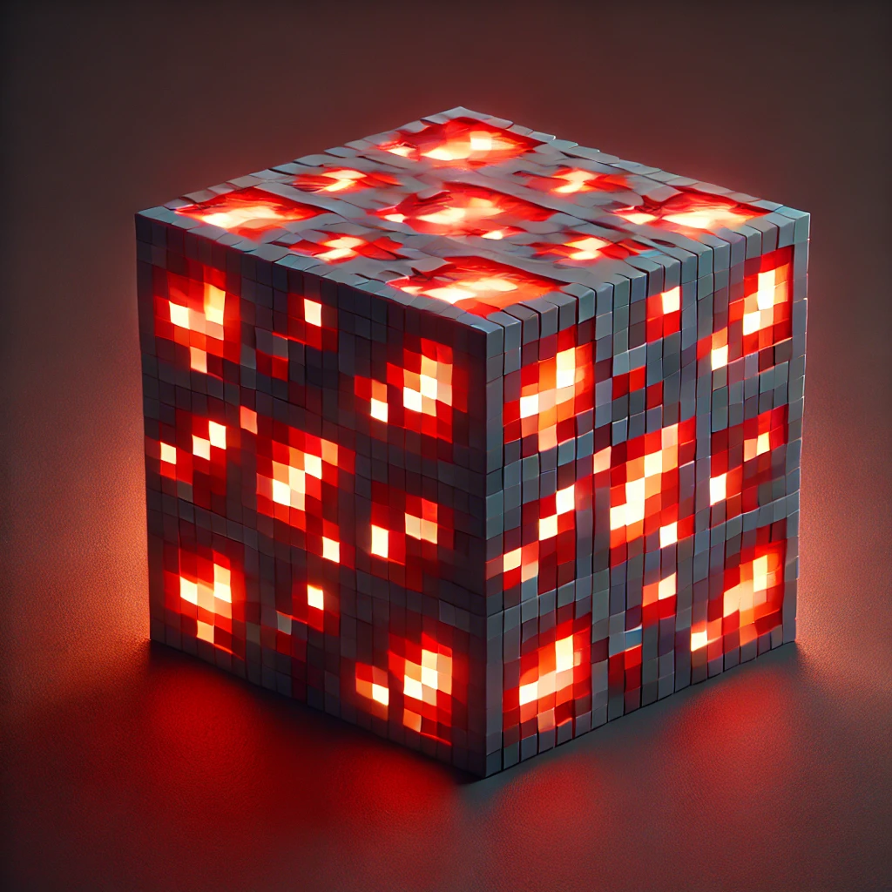
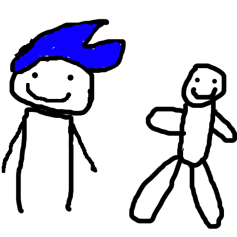
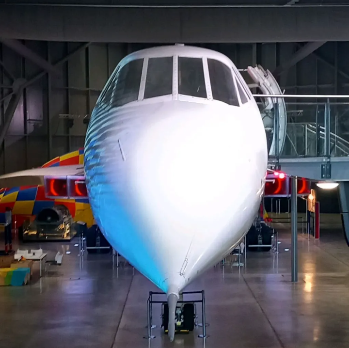

Valgfrihet
Ulike arbeidsflyter og profiler uten å trenge et helt annet operativsystem.
A26.07.02S · FØRSTE STABILE UTGAVE
MuliOS er en Arch Linux-basert distribusjon med fokus på valgfrihet, ytelse og tilpasning.
OM
MuliOS gir et enkelt system som kan konfigureres etter ulike måter å bruke en datamaskin på.
Ulike arbeidsflyter og profiler uten å trenge et helt annet operativsystem.
Et fokusert system med fornuftige standardvalg og maskinvaretilpassede forbedringer.
Skrivebordsinnstillinger, profiler og verktøy som lar systemet følge brukeren.
SYSTEM
Den stabile utgaven samler de viktigste MuliOS-komponentene i ett system.
A26.07.02S
Publisert 20. september 2026. Bygget på Arch Linux og levert som en x86_64 KDE Plasma-ISO.
COMMUNITY
MuliOS utvikles åpent under GNU GPL v3.0.
BIDRAG
Project Lead; Developer
Lead Developer; Web and Software Developer; Translation
Developer; Apps Manager; Translation

Lead Developer; Developer

Developer; Apps Manager
Animations

Manager